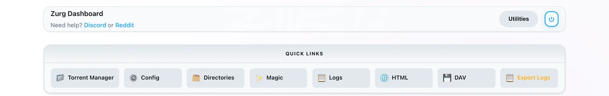
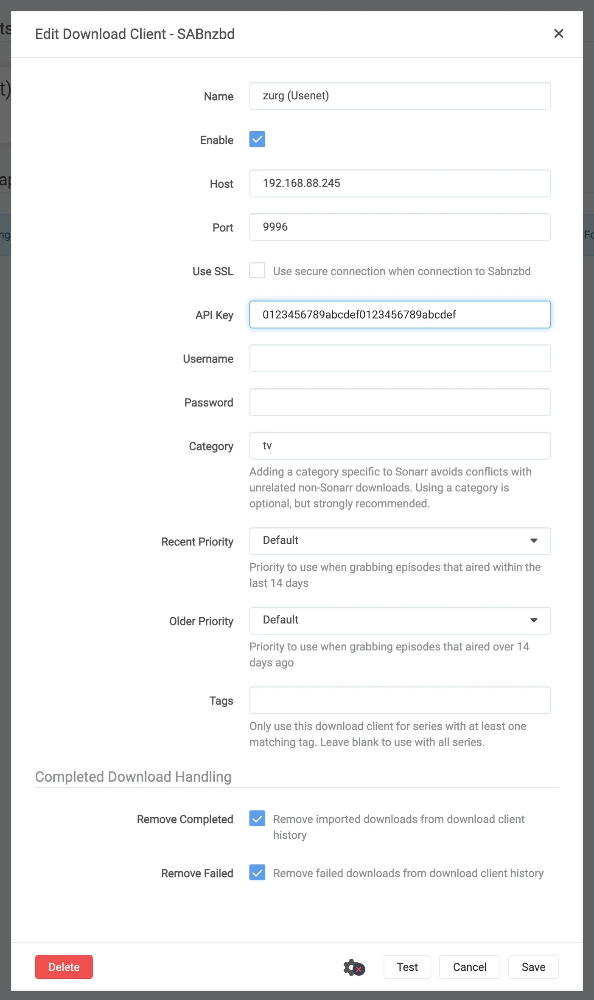
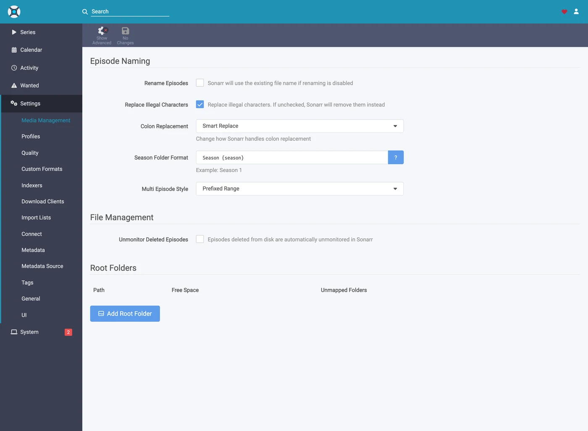
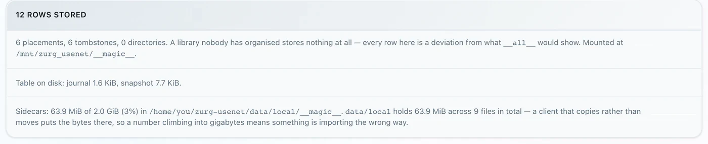

Sonarr et Radarr, étape par étape
Il existe trois façons d'utiliser Sonarr et Radarr avec zurg. Choisis qui cherche sur zurg ou les *arrs. Voir lequel choisir.
Les deux premières peuvent tourner côte à côte. Elles partagent le même dossier __magic__.
Configure Sonarr et Radarr pour pointer vers zurg afin de récupérer depuis Usenet sans client. Aucune vidéo complète n'est téléchargée ni décompressée pendant une récupération. Les NZB et les caches utilisent quand même du disque. Cette page couvre Usenet. Le endpoint torrent utilise les mêmes clients et partage le dossier. Voir Sonarr et Radarr pour les torrents.
Tout ce qui suit a été capturé avec zurg nightly-993-g99bcf9a4, Sonarr 4.0.19.2979 et Radarr 6.3.0.10514, sur une installation en conditions réelles avec un vrai compte Usenet. Les noms d'hôte et d'utilisateur ont été remplacés par you@zurg-server. Les noms d'indexeurs sont my-indexer. Les clés API et les nombres de bibliothèque sont fictifs. Rien d'autre dans la sortie capturée n'a été modifié. Les lignes de log torbox_nzb ont été lues dans le code source de zurg le 2026-11-09, et non capturées en direct.
Avant de commencer
Trois choses doivent être vraies. Vérifie les trois maintenant : chacune d'elles échoue plus tard sous la forme de quelque chose qui semble sans rapport.
- zurg a un fournisseur
nzb, ou untorbox_nzb(TorBox Pro). Sans l'un des deux, rien ne peut lire ce que l'endpoint écrit, et chaque tâche est signalée comme Failed au bout de 30 minutes, quand zurg abandonne l'attente de son apparition dans la bibliothèque. Voir Usenet, ou Usenet hébergé par TorBox pourtorbox_nzb. magic.enabledvauttrue. Sans cela, le dossier terminé n'existe pas et chaque import échoue. Voir__magic__.- Le montage est visible par les *arr au chemin que zurg indique. Si Sonarr tourne dans un conteneur, lis
l'étape 8 avant de configurer quoi que ce soit. Installé comme une application classique sur la même machine, il voit le montage là où zurg le monte, avec un piège sur chaque système :- Linux : un *arr lancé sous un autre utilisateur que zurg voit un dossier vide tant que
user_allow_othern'est pas activé. Voir Installation sous Linux. - macOS : lance-le avec le même utilisateur que zurg. Le montage est
/Volumes/Zurg, sauf si tu as modifiémount_path. - Windows : lance Sonarr et Radarr comme application dans la zone de notification, ce que propose leur installateur, et non comme service Windows. Le lecteur
Z:de zurg appartient à la session dans laquelle tu es connecté, et un service s'exécute en dehors de cette session, donc il ne voit pas le lecteur. Voir les règles de session.
- Linux : un *arr lancé sous un autre utilisateur que zurg voit un dossier vide tant que
Vérifie les deux premiers directement dans le fichier de configuration, dans le répertoire de travail de zurg. Sous Windows, ouvre plutôt config.yml dans Bloc-notes.
$ grep -A6 '^providers:' config.yml
providers:
- type: nzb
nntp:
host: news.example.com
port: 563
tls: true
username: <redacted>
password: <redacted>
$ grep -A4 '^magic:' config.yml
magic:
enabled: true
allow_delete: false
sidecar_max_mb: 32
sidecar_budget_mb: 2048allow_delete: false est la valeur sûre par défaut et n'affecte pas les imports : une suppression dans __magic__ masque l'entrée au lieu de retirer du contenu du compte.
1. Activer l'endpoint
Deux méthodes, même résultat. Les deux écrivent dans config.yml et nécessitent toutes deux un redémarrage : les routes qui servent __magic__ et l'endpoint SABnzbd sont enregistrées une seule fois, au démarrage de zurg.
Option A — le tableau de bord
Ouvre le tableau de bord de zurg, clique sur Config, puis fais défiler jusqu'à __magic__ & Download Clients. Active Serve __magic__ et SABnzbd Endpoint, puis règle SABnzbd Categories sur tv, movies.

Config est l'endroit où se trouve le réglage ; Magic est l'endroit où tu verras arriver les grabs plus tard.

Laisse SABnzbd Completed Directory vide, sauf si ton *arr monte zurg à un autre endroit que zurg lui-même — voir
Option B — config.yml
Ajoute le bloc à la main, puis redémarre zurg.
magic:
enabled: true
sabnzbd:
enabled: true
api_key: "" # empty = zurg generates one and keeps it
categories: [tv, movies]
complete_dir: "" # empty = <mount_path>/__magic__/__all__Les catégories ne sont pas des dossiers. Elles mènent toutes au même endroit : le dossier d'une tâche est le dossier propre de la release sous __magic__/__all__. La liste sert seulement à ce que Sonarr et Radarr arrêtent d'avertir au sujet d'une catégorie qu'ils ne trouvent pas. Si la catégorie de Sonarr est tv, tv doit figurer dans cette liste.
Redémarre zurg, puis vérifie que le provider a bien été pris en compte :

Une seule ligne nzb ou torbox_nzb suffit pour le endpoint.
2. Trouver la clé API
La clé API est toute l'authentification de cet endpoint. Récupère-la correctement une fois, et ne la colle nulle part en public.
Si tu as laissé api_key vide, zurg en a généré une au premier démarrage et l'a écrite dans data/sabnzbd-apikey :
$ cat data/sabnzbd-apikey
0123456789abcdef0123456789abcdef
Clé d'exemple, la tienne sera différente. Le fichier survit aux redémarrages, donc la clé reste stable une fois générée.
Si tu as défini api_key toi-même, elle se trouve dans config.yml et aucun fichier n'est écrit. Le tableau de bord t'indique dans quel cas tu te trouves, en bas du bloc de l'étape 1. Il affiche soit pinned in config.yml under sabnzbd.api_key, soit generated and kept in data/sabnzbd-apikey.
Cet endpoint n'est pas couvert par l'authentification basique de zurg. Ni Sonarr ni Radarr n'envoient jamais d'authentification basique à un client de téléchargement, et leur couche HTTP transforme un 401 en « unable to connect », sans rien d'exploitable. zurg exempte donc volontairement /api. La clé API est le seul verrou. Traite ce port comme le reste de zurg : sur un réseau de confiance, ou derrière quelque chose qui l'est.
3. Vérifier qu'elle répond
Fais ça avant de toucher à Sonarr. Ça prend dix secondes et ça permet de savoir, pour le reste de la configuration, si le problème vient de zurg ou du *arr.
$ SAB=0123456789abcdef0123456789abcdef
$ ZURG=192.168.88.245:9996
$ curl -s "http://$ZURG/api?mode=version&apikey=$SAB&output=json"
{"version":"4.5.1"}
$ curl -s "http://$ZURG/api?mode=get_config&apikey=$SAB&output=json" \
| jq '.config.misc.complete_dir, [.config.categories[].name]'
"/mnt/zurg_usenet/__magic__/__all__"
[ "*", "tv", "movies" ]Dans PowerShell. Tape curl.exe, et non curl : dans Windows PowerShell, curl est une autre commande.
PS> $SAB = "0123456789abcdef0123456789abcdef"
PS> $ZURG = "192.168.88.245:9996"
PS> curl.exe -s "http://$ZURG/api?mode=version&apikey=$SAB&output=json"
{"version":"4.5.1"}
PS> (Invoke-RestMethod "http://$ZURG/api?mode=get_config&apikey=$SAB&output=json").config.misc.complete_dir
Z:/__magic__/__all__complete_dir est le chemin que zurg donnera aux clients. Vérifie maintenant que c'est un chemin qu'eux peuvent ouvrir.
Ensuite, vérifie qu'une mauvaise clé est bien refusée (sous Windows, curl.exe avec les mêmes URL) :
$ curl -s "http://$ZURG/api?mode=queue&apikey=wrongkey&output=json"
{"status":false,"error":"API Key Incorrect"}
$ curl -s "http://$ZURG/api?mode=queue&output=json"
{"status":false,"error":"API Key Required"}mode=version ne sert pas à tester l'authentification. Il répond {"version":"4.5.1"} même avec une mauvaise clé. C'est le comportement de SABnzbd, et zurg le reproduit. Utilise mode=queue ou mode=get_config si ce que tu veux vraiment tester, c'est la clé.
Les deux formes d'URL fonctionnent, donc tu peux utiliser l'une ou l'autre dans le champ URL Base du client :
Si /api renvoie un simple 404, c'est que sabnzbd.enabled est toujours à false, ou que zurg n'a pas été redémarré depuis que tu l'as modifié.
4. Créer les dossiers racines
Crée-les avant de les ajouter, car la fenêtre Add Root Folder du *arr parcourt le système de fichiers en direct et ne proposera pas un dossier qui n'existe pas.
$ mkdir -p /mnt/zurg_usenet/__magic__/tv /mnt/zurg_usenet/__magic__/movies
$ ls -d /mnt/zurg_usenet/__magic__/tv /mnt/zurg_usenet/__magic__/movies
/mnt/zurg_usenet/__magic__/movies
/mnt/zurg_usenet/__magic__/tvPS> New-Item -ItemType Directory -Force Z:\__magic__\tv, Z:\__magic__\moviesOu crée les deux dossiers dans l'Explorateur.
Remplace /mnt/zurg_usenet par ton propre mount_path. Si rien n'est défini, il vaut /mnt/zurg sur Linux, /Volumes/Zurg sur macOS et Z: sous Windows. Les noms des dossiers sont à toi de choisir ; tv et movies correspondent simplement aux catégories.
Le dossier racine doit être à côté du dossier completed, ni dedans ni au-dessus. zurg donne aux clients __magic__/__all__, c'est-à-dire ta bibliothèque telle que __all__ la liste. Tes dossiers racine se trouvent juste à côté, dans __magic__/tv et __magic__/movies. Pas __magic__/__all__, pas __magic__ lui-même et pas /mnt/zurg_usenet. Les deux clients affichent une vérification de santé quand un dossier racine est le dossier de sortie du client de téléchargement, et Radarr en affiche aussi une quand un dossier racine contient ce dossier. Les dossiers frères ne déclenchent aucun des deux, et un import manuel pointé vers le dossier completed n'a alors qu'une seule release à examiner au lieu de toute ta bibliothèque.
Voici à quoi ressemble une erreur. Les deux captures sont réelles, prises sur les deux clients. Elles datent d'avant que le dossier completed ne descende vers __magic__/__all__, donc les chemins affichés sont d'un niveau plus haut que les tiens ; les deux règles qu'elles montrent sont les mêmes :

Sonarr avec le dossier completed lui-même ajouté comme dossier racine : il avertit parce que le dossier racine est le dossier de sortie.

Radarr avec /mnt/zurg_usenet ajouté : il avertit aussi pour le parent, ce que Sonarr ne fait pas. Déplace le dossier racine à côté du dossier completed et les deux avertissements disparaissent.
5. Ajouter le client dans Sonarr
Une nouvelle installation de Sonarr bloque tout derrière un écran de premier lancement. Choisis Forms (Login Page), définis un nom d'utilisateur et un mot de passe, puis clique sur Save.

Tu ne pourras pas passer tant que Authentication Method n'est pas réglé sur autre chose que None.

Après Save, tu es déconnecté une fois et tu arrives sur la page de connexion.

Settings → Download Clients
Rendez-vous dans Settings → Download Clients. Sur une installation fraîche, il n'y a rien ici à part la carte +.

Cliquez sur le + sous « Download Clients », et non celui plus bas, sous « Remote Path Mappings ».
Choisissez SABnzbd dans la colonne Usenet.

zurg imite spécifiquement SABnzbd, donc rien d'autre dans cette liste ne fonctionnera.
La fenêtre s'ouvre avec les valeurs par défaut de SABnzbd : localhost, port 8080, sans clé.

Ce qu'il faut mettre dans chaque champ

La clé API affichée est un exemple : colle la tienne.
Dans Docker, « localhost » et le nom d'hôte mentent tous les deux. Dans un conteneur, localhost désigne le conteneur lui-même, et le nom d'hôte de la machine correspond en général à 127.0.1.1, qui est aussi le conteneur. Utilise l'IP LAN ou Tailscale de l'hôte, jamais localhost ni le nom d'hôte seul, même si les deux fonctionnent très bien depuis ton shell.
Clique sur Test. Une coche verte signifie que les quatre vérifications du client ont réussi : version, clé API, configuration globale et catégorie.

Clique maintenant sur Save.

6. Ajouter le dossier racine dans Sonarr
Allez dans Settings → Media Management et faites défiler jusqu'en bas.

Cliquez sur Add Root Folder. Un explorateur de fichiers s'ouvre sur le système de fichiers de Sonarr, qui, avec Docker, est celui du conteneur.

Saisissez le chemin dans la zone en haut. Si le montage est bien visible pour Sonarr, le contenu de __magic__ s'affiche pendant que vous tapez : __all__ avec toutes les releases, ainsi que tout ce que vous avez créé à côté. C'est la preuve la plus rapide que le bind mount est correct.

Si le dossier est vide ou si une erreur apparaît, arrêtez-vous et corrigez le montage avant de continuer.

Terminez le chemin par __magic__/tv (Z:\__magic__\tv sous Windows) et cliquez sur Ok.

Si Free Space affiche un nombre plausible, Sonarr peut lire les informations du montage. Unmapped Folders compte les releases qui se trouvent déjà à cet endroit.
7. Faire de même dans Radarr
Identique, avec deux valeurs modifiées : la catégorie est movies et le dossier racine est __magic__/movies.

La première exécution de Radarr fonctionne de la même façon : active Forms auth, puis connecte-toi.

Settings → Download Clients → +, puis SABnzbd sous Usenet.

Même hôte, même port, même clé. Seule la Category change : movies, et non tv.

Test, coche verte, Save.

Ensuite, va dans Settings → Media Management → Root Folders → Add Root Folder et ajoute /mnt/zurg_usenet/__magic__/movies.
Un seul zurg, deux clients, une seule file d'attente. La file d'attente et l'historique de zurg sont filtrés uniquement par catégorie. Deux Sonarr utilisant tv verront les tâches de l'autre ; Sonarr sur tv et Radarr sur movies ne se verront pas. Avec un seul client par catégorie, ce problème n'arrive jamais.
8. Si votre *arr tourne dans Docker
Cette étape concerne Docker sur un hôte Linux. Docker Desktop sur macOS et Windows exécute les conteneurs dans une machine virtuelle. Le montage rslave ci-dessous repose sur la propagation de montage de Linux (voir Docker setup), et le fait de transmettre le montage de zurg à un conteneur sur ces systèmes n'a pas été testé. Sur macOS et Windows, installez plutôt Sonarr et Radarr comme applications classiques, comme le décrit
Trois problèmes distincts. Le deuxième coûte un téléchargement à chaque import. Le troisième ne se manifeste qu'à la première fois que zurg redémarre.
Le chemin que zurg signale doit être un chemin que le client peut ouvrir
Si le conteneur monte la bibliothèque à un autre endroit que zurg, chaque import échoue avec download doesn't contain intermediate path ou avec un health check de remote path. Vous pouvez corriger ça de l'une ou l'autre façon, les deux conviennent :
- Définissez
sabnzbd.complete_diravec le chemin que le client voit. C'est le plus simple quand il n'y a qu'un seul client, ou plusieurs qui montent la bibliothèque au même endroit. - Ajoutez un remote path mapping dans le *arr. Utilisez cette option quand différents clients la montent différemment.
sabnzbd:
complete_dir: "/data/zurg/__magic__/__all__" # what the *arr sees, not what zurg seesPour la seconde, allez dans Settings → Download Clients et cliquez sur le + sous Remote Path Mappings, celui du bas de la page, pas celui utilisé à l'étape 5.

Host doit être exactement la chaîne d'hôte que vous avez saisie dans le download client. Remote Path est le chemin que zurg indique ; Local Path est l'endroit où le client le voit.
Un seul volume pour le dossier de téléchargement et les dossiers racines
Un import depuis __magic__/__all__ vers __magic__/tv ne coûte rien, car c'est un simple renommage. Un renommage ne fonctionne qu'à l'intérieur d'un même montage. Si vous donnez au conteneur les deux dossiers comme deux volumes, il voit deux systèmes de fichiers. Les deux sont pourtant le montage de zurg en dessous, et ça ne change rien.
volumes: # do not do this
- /mnt/zurg_usenet/__magic__/__all__:/downloads
- /mnt/zurg_usenet/__magic__/tv:/tvLe noyau refuse le renommage dans le conteneur. Sonarr et Radarr copient alors le fichier puis suppriment l'original, sans rien dire. Chaque import télécharge toute la release depuis votre compte et l'écrit sur le disque de zurg. L'import réussit quand même. Il est juste lent. Un épisode de 1.46 GB a pris 50 secondes et 2.9 GB de trafic de cette façon. Avec un seul volume, ça a pris une seconde et rien n'a été lu.
Donnez au conteneur un seul volume qui contient tout le montage de zurg. Accédez au dossier de téléchargement et aux dossiers racine à travers lui. Le bind de la section suivante fait exactement cela. Un remote path mapping ou complete_dir pointe ensuite le client vers __all__ dans ce même volume.
Un import manuel réglé sur Hardlink/Copy Files copie aussi. Choisissez Move Files.
Monter le parent du point de montage, pas le point de montage lui-même
C'est celui qui coûte un après-midi. C'est aussi le seul volume que la section ci-dessus demande. Redémarrer zurg démonte /mnt/zurg_usenet puis le remonte. Un conteneur qui a monté le point de montage lui-même garde la connexion fuse avec laquelle il a démarré, et celle-ci est maintenant morte. Chaque lecture répond alors Socket not connected, et comme les deux clients vérifient l'espace libre sur le dossier racine avant de lancer un téléchargement, chaque release est silencieusement rejetée :
FreeSpaceSpecification: Socket not connectedRien dans aucun des deux clients n'indique que le montage est périmé. Le dossier apparaît toujours dans le conteneur, et un grab interactif envoyé directement au client fonctionne encore. Ce que ça donne, c'est un *arr qui a discrètement cessé de chercher.
Monte le parent avec rslave, et le remontage arrive comme un événement de sous-montage que le conteneur suit :
volumes:
- type: bind
source: /mnt # the parent, not /mnt/zurg_usenet
target: /mnt
bind:
propagation: rslaveVérifie un conteneur après chaque redémarrage de zurg. Tu veux voir une taille, pas une erreur :
$ docker exec radarr df -h /mnt/zurg_usenet
Filesystem Size Used Avail Use% Mounted on
zurg{PGSq4}: 1.0P 0 1.0P 0% /mnt/zurg_usenetLe pétaoctet, c'est zurg qui signale un système de fichiers virtuel, pas un disque. C'est normal, et c'est précisément ce qui satisfait la vérification d'espace libre du *arr.
9. Suivre un envoi du début à la fin
Ajoute une seule chose, lance-la à la main et suis-la jusqu'au bout. Tout ce qui suit est un vrai grab fait avec la configuration décrite plus haut.
Lancer le téléchargement
Ouvrez un film (ou un épisode), cliquez sur Interactive Search, puis choisissez une release.

La colonne Source affiche nzb, c'est le protocole que zurg peut prendre en charge.
Cliquez sur le bouton avec la flèche circulaire à la fin de la ligne pour lancer le téléchargement. Si la release ne correspond pas proprement, le client vous demande d'abord de confirmer le mapping :

Override and Grab apparaît quand le client veut que vous confirmiez ce qu'est la release. Vérifiez le mapping puis cliquez sur Grab Release. Un grab automatique normal n'affiche jamais cette fenêtre.
Il arrive dans la file d'attente

Activité → File d'attente juste après la prise. Remarquez la barre de progression : elle est pleine, et Time Left affiche un tiret. Il n'y a aucun téléchargement à mesurer, donc une tâche est soit en file d'attente, soit terminée, et il n'y a rien entre les deux. Les autres lignes ici appartiennent à un second Radarr pointé vers le même zurg, sur la même catégorie — voir la note à l'étape 7.
zurg écrit le NZB puis le lit
Aug 25 14:44:03 zurg-server zurg[3034965]: INFO nzb Loaded NZB
Last.Week.Tonight.with.John.Oliver.S13E22.480p.WEB.x264-RMTeam.nzb: 4 files
Aug 25 14:50:28 zurg-server zurg[3034965]: INFO nzb Loaded NZB
Untold.The.Testimony.of.Vince.Young.2026.1080p.NF.WEB-DL.DD+5.1.Atmos.H.264-playWEB.nzb: 9 filesLoaded NZB … : N files est la ligne qui indique que le NZB a été analysé. Si un job est signalé Failed après 30 minutes, quand zurg abandonne l'attente de son apparition dans la bibliothèque, c'est cette ligne qui manque.
L'import se fait

Activity → History. Deux événements, à quelques secondes d'écart : Grabbed, puis Movie Imported.

Status: Downloaded, Size 4.7 GiB, et pourtant rien n'a été téléchargé.
Vérifier que le fichier est réel
L'import a déplacé le fichier dans le dossier racine. Vérifie les deux extrémités du fichier et demande à ffprobe ce que c'est :
Si ton shell ne trouve pas ffprobe, utilise ~/zurg/bin/ffprobe : le setup y place sa propre copie quand aucune n'est installée.
$ ls -la "/mnt/zurg_usenet/__magic__/movies/Untold - The Testimony of Vince Young (2026)/"
-rw-r--r-- 1 you you 4920958828 Aug 25 14:53 Untold.The.Testimony…playWEB.mkv
$ dd if="$F" bs=1M count=1 >/dev/null
1048576 bytes (1.0 MB, 1.0 MiB) copied, 0.0429446 s, 24.4 MB/s
$ ffprobe -v error -show_entries format=duration,size,format_name \
-of default=noprint_wrappers=1 "$F"
format_name=matroska,webm
duration=4709.440000
size=4920958828Dans PowerShell, depuis le dossier de zurg. Le setup y a placé bin\ffprobe.exe, sauf si un ffprobe était déjà dans ton PATH ; dans ce cas, tape ffprobe à la place :
PS> $F = Get-Item "Z:\__magic__\movies\Untold - The Testimony of Vince Young (2026)\*.mkv"
PS> $F.Length
4920958828
PS> bin\ffprobe.exe -v error -show_entries format=duration,size,format_name -of default=noprint_wrappers=1 $F.FullName
format_name=matroska,webm
duration=4709.440000
size=4920958828Un Matroska de 78 minutes, streamé à partir d'articles Usenet à la demande. Les octets arrivent quand quelque chose les lit, pas quand les *arr importent.
10. Ajouter une release à la main
Parfois Sonarr ou Radarr ne récupère jamais la release que vous voulez. Les indexeurs qu'il interroge ne l'ont peut-être pas, ou un profil de qualité ou un format personnalisé la refuse. Vous pouvez donner vous-même le NZB à zurg, sous la catégorie de l'application qui doit l'importer. Cette application l'importe alors comme si elle l'avait récupérée elle-même.
Si la release se trouve sur un indexeur que l'application interroge, essayez d'abord l'application. Interactive Search affiche aussi les releases rejetées. En en récupérant une, elle part vers zurg comme n'importe quelle autre récupération. Radarr a récupéré une release IMAX que son profil avait rejetée, avec un score de 0 par rapport à un format personnalisé requis, et l'a importée.
$ SAB=0123456789abcdef0123456789abcdef
$ ZURG=192.168.88.245:9996
# an NZB file you already have (the upload field is called name, as in SABnzbd)
$ curl -s "http://$ZURG/api?mode=addfile&apikey=$SAB&cat=movies" \
-F 'name=@Movie.Title.2024.1080p.WEB-DL.nzb'
{"status":true,"nzo_ids":["SABnzbd_nzo_…"]}
# or a link to one, which zurg downloads itself
$ curl -s -G "http://$ZURG/api" \
--data-urlencode mode=addurl --data-urlencode "apikey=$SAB" --data-urlencode cat=movies \
--data-urlencode 'name=https://indexer.example/getnzb/<id>?r=<indexer-key>' \
--data-urlencode nzbname=Movie.Title.2024.1080p.WEB-DL
{"status":true,"nzo_ids":["SABnzbd_nzo_…"]}En PowerShell, avec curl.exe et non curl. Chacune répond {"status":true,"nzo_ids":[…]} comme ci-dessus.
$SAB = "0123456789abcdef0123456789abcdef"
$ZURG = "192.168.88.245:9996"
# an NZB file you already have (the upload field is called name, as in SABnzbd)
curl.exe -s "http://$ZURG/api?mode=addfile&apikey=$SAB&cat=movies" -F "name=@Movie.Title.2024.1080p.WEB-DL.nzb"
# or a link to one, which zurg downloads itself
curl.exe -s -G "http://$ZURG/api" `
--data-urlencode mode=addurl --data-urlencode "apikey=$SAB" --data-urlencode cat=movies `
--data-urlencode "name=https://indexer.example/getnzb/<id>?r=<indexer-key>" `
--data-urlencode nzbname=Movie.Title.2024.1080p.WEB-DL--data-urlencode garde le ? et le & du lien à l'intérieur de name. La tâche apparaît dans la file de l'application lors de sa prochaine vérification, dans la minute.
Cinq éléments déterminent la suite.
- Le film ou la série doit déjà être dans cette application. Elle n'importe que ce qu'elle peut associer à un élément qu'elle gère.
- Le nom doit indiquer de quoi il s'agit. La tâche prend le nom de fichier du NZB, ou
nzbnamesi vous le passez. Sansnzbname,addurlutilise le nom de fichier servi par l'indexeur. Ajoutez une année au nom. - La catégorie choisit l'application.
cat=moviesatteint le Radarr dont le client de téléchargement utilisemovies. Chaque application ne regarde que sa propre catégorie. - Le profil de qualité ne bloque pas l'import. Le fichier que vous avez déjà peut le bloquer. Radarr ne vérifie ni les qualités autorisées ni le score minimum de format personnalisé à l'import. Il a importé un BluRay 720p avec un score de 0 dans un profil qui n'autorise que le 2160p et exige un score de 100. Il a aussi importé un WEBRip 1080p dans un film dont le profil n'autorise que le 720p. Il a ensuite pris un BluRay 1080p à la place, comme mise à niveau, et supprimé le WEBRip. Un WEB-DL ajouté après cela s'est arrêté dans Activity avec Not an upgrade for existing movie file. Activity → Queue → Manual Import l'importe quand même et remplace le fichier.
- Un échec, c'est à vous de le régler. L'application ne met jamais sur liste noire et ne supprime jamais un téléchargement qu'elle n'a pas récupéré elle-même. Une release dont les articles avaient disparu des serveurs de news est revenue en Failed depuis zurg et est restée dans la file de Radarr avec Download has failed wasn't grabbed by Radarr, skipping automatic download handling. Retirez-la de la file et choisissez une autre release.
Mesuré le 2026-10-10 avec Radarr 6.3, en utilisant addfile et addurl, y compris un profil qui exige un format personnalisé construit à partir d'un nom de release. Chaque import était un renommage vers __magic__/movies et rien n'a été copié. Sonarr n'a pas été testé.
Merci à .telmen sur Discord d'avoir demandé comment faire cela avec Usenet.
Suivre les choses du côté de zurg
La page /magic/ de zurg liste chaque NZB qui a déjà été envoyé à l'endpoint. Sonarr et Radarr suppriment les jobs qu'ils ont récupérés, et l'enregistrement est conservé une semaine après, pour qu'un poll qui arrive en même temps qu'une suppression réponde toujours la même chose. Un job Failed ou Stuck (en file d'attente depuis plus d'une heure) qu'aucun client ne supprimera jamais, par exemple après avoir arrêté d'utiliser zurg comme client de téléchargement, peut être nettoyé ici en maintenant son bouton Clear enfoncé. Le nettoyage d'un job supprime son NZB, sauf si un import l'utilise encore.

Les Placements sont les fichiers que les clients ont déplacés ; les tombstones sont les dossiers de jobs qu'ils ont supprimés ensuite. Si un client copie au lieu de déplacer, la page affiche un tableau rouge Imports that were copies. zurg transforme ces copies en placements et les supprime, mais chacune était quand même un téléchargement complet, donc corrige les volumes.

State résume tout : Queued veut dire que zurg n'a pas encore fini avec la release, que ce soit parce que la bibliothèque ne l'a pas encore listée, que ses tailles de fichiers ne sont pas stabilisées ou que ses articles n'ont pas encore été vérifiés ; Completed veut dire qu'elle est prête à être importée ; et Release indique le dossier depuis lequel le client importe.
La colonne Release est lue depuis la bibliothèque à chaque poll, elle n'est pas stockée. Renomme la release dans le dashboard de zurg, laisse une réparation la reconstruire, ou laisse zurg ajouter un suffixe parce que deux releases portent le même nom : le job suit le changement.
Ce qui fonctionne, et ce qui ne fonctionne pas
Fonctionne :
- Le test de connexion, les quatre vérifications, dans les deux clients.
- La récupération, la file d'attente, l'historique, l'import par renommage et le nettoyage après import.
- Relancer la même release. Chaque nouvelle récupération reçoit son propre identifiant de tâche, pour que le client agisse dessus au lieu de réutiliser le résultat de l'ancienne tâche. La release sous-jacente reste la même. Une nouvelle récupération d'une release qu'un import précédent a déjà vidée est signalée Failed. Son dossier sous
__magic__/__all__n'a plus rien à importer, et Failed fait que le client la met sur liste noire et en essaie une autre. La récupération qui a vidé le dossier affiche toujours Completed jusqu'à ce que le client la supprime. - Retirer une tâche de la file d'attente, avec ou sans suppression du NZB.
mode=addurl, pour une personne ou une automatisation qui transmet une URL au lieu d'envoyer un fichier. Aucun des *arr ne l'utilise.
Ne fait pas :
- Pas de progression. Une tâche est en attente ou terminée ; il n'y a pas de pourcentage entre les deux, car il n'y a pas de téléchargement à mesurer. La file d'attente affiche la taille déclarée du NZB pour que la ligne ne soit pas vide.
- Pas de pause, de reprise, de limite de vitesse, de priorité ni de script de post-traitement. SABnzbd propose tout cela ; zurg n'a rien à leur appliquer.
del_fileslors de la suppression d'une tâche terminée dans l'historique est ignoré. (Pour une tâche Failed, il supprime le NZB si rien n'a été importé à partir de celui-ci.) Le client veut dire « le dossier de la tâche est de nouveau à vous », mais le fichier qui vient d'être importé continue d'être servi à partir de ce NZB. Le dossier que le client voulait voir disparaître a disparu : il l'a supprimé lui-même, via le montage.- L'authentification de base ne peut pas protéger ce point d'accès. La clé API est le seul verrou.
Le signal d'échec. Une release qui ne contient rien d'importable est signalée Failed, et les deux clients la mettent sur liste noire et récupèrent une alternative. Cela couvre une release dont tous les fichiers sont cassés, supprimés ou filtrés ; une release ne contenant que des .par2, des .sfv et des fichiers annexes ; une release dont chaque fichier a un format qu'aucun lecteur ne gère, ce qui correspond à un post obfusqué qui nomme son jeu RAR .z001….z133 ; et une archive déjà ouverte dont on a constaté qu'elle ne contient aucun média. Un jeu RAR est du contenu, pas un simple échafaudage : zurg diffuse la vidéo directement à partir de celui-ci. Si une release contient vraiment quelque chose pour lequel zurg n'a pas d'extension, élargissez addl_playable_extensions plutôt que de la mettre sur liste noire.
Les articles sont vérifiés avant qu'une tâche soit signalée comme terminée. zurg attend que la bibliothèque liste la release et que la taille de ses fichiers se soit stabilisée. Il interroge ensuite les serveurs de news sur le début et la fin de chaque fichier de contenu, soit les seize premiers articles et le dernier. Il télécharge aussi le premier article de chaque fichier. Cela représente jusqu'à soixante-quatre articles, plus quelques-uns pour une release qui ne comporte que quelques fichiers. Certains serveurs de news indiquent encore qu'un article existe alors que son contenu a été retiré, et seul un téléchargement le révèle. Un article téléchargé montre aussi qu'il appartient bien à ce post et non à un autre envoi. La tâche reste Queued tant que cette vérification n'a pas abouti. Les dommages que l'échantillon n'atteint pas ne sont pas détectés ici ; ils apparaissent lors de la lecture qui les atteint. Une release dont les articles sont absents reçoit d'abord une réparation PAR2, puis est vérifiée à nouveau une fois la réparation effectuée. Si elle est de nouveau complète, elle continue. Si elle manque encore des articles, ou si rien ne peut la réparer, elle est signalée Failed avec le nombre d'éléments manquants. C'est un échec de téléchargement, celui sur lequel les clients agissent : ils mettent la release sur liste noire et en récupèrent une autre sans intervention, plutôt que d'importer quelque chose qui ne se lira pas. Avec torbox_nzb, il n'y a ni serveurs de news ni vérification d'articles : une récupération est vérifiée uniquement par le fait que TorBox a récupéré le NZB.
Une vérification qui ne peut pas aboutir n'attend pas indéfiniment. Parfois, la vérification ne peut pas se terminer du tout. Le pool de connexions peut être hors service, le compte peut être limité ou le délai peut être dépassé. Ce n'est pas une réponse. La tâche reste Queued et est interrogée à nouveau une minute plus tard. zurg compte les tentatives sur la tâche, pour qu'un redémarrage ne les oublie pas. Après trente échecs consécutifs sur une période d'au moins trois heures, la tâche passe dans l'historique avec le statut Failed. Le message indique le nombre de tentatives, la durée et la dernière erreur. Une panne faite uniquement de refus explicites atteint trente tentatives en moins d'une heure et ne fait pas échouer la file d'attente pour autant.
Une release qui quitte la bibliothèque fait échouer sa tâche. Une release peut être supprimée depuis le tableau de bord, voir son NZB retiré du répertoire surveillé, ou être abandonnée par tous les comptes. Sa tâche reste Queued pendant quinze minutes, puis passe dans l'historique avec le statut Failed. Le client met la release sur liste noire et en récupère une autre. Cette attente existe pour les redémarrages : la bibliothèque retire toutes les releases pendant son chargement, et cela ne doit pas être interprété comme une suppression. Rien n'échoue pour ce motif pendant les quinze premières minutes après le démarrage de zurg. Une tâche dont la release n'a jamais été listée par la bibliothèque n'est pas concernée, car elle est encore en cours d'arrivée.
Dépannage
Toujours bloqué ? Posez la question dans le forum zurg-support sur Discord. Obtenir de l'aide indique quoi inclure.